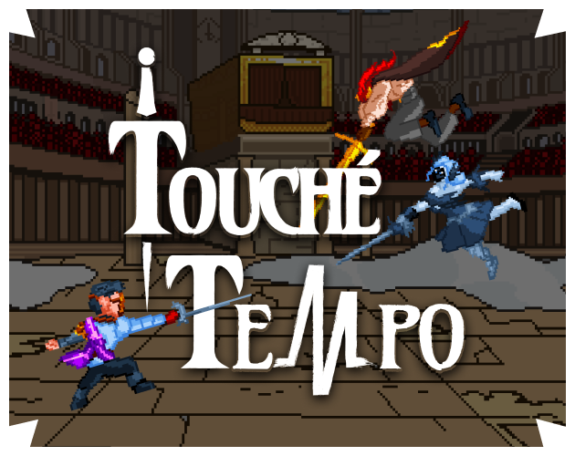

Touché Tempo

Winning #1 for Achievement in Accessibility at Level-Up Showcase 2026, Touché Tempo
is a rhythm-fighting game where you use the music to help parry your opponent's attacks in the devil's
fencing tournament.
I worked as the main gameplay designer & programmer but also had a hand in
background art & sfx.
Play
C# | FMOD | Aseprite | 3 Months | Team of 6